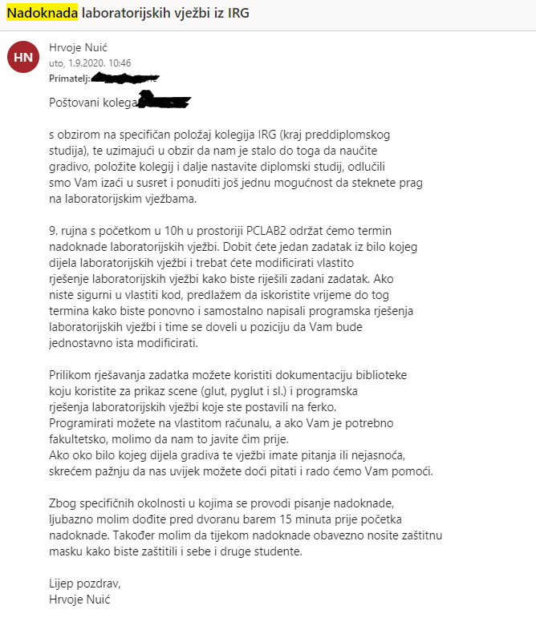

ina ma vjv ako imaš ispričnicu organiziraju termin sljedeći tjedan ili kad već, za to se ne bih brinuo. U ekstremnom slučaju ako sjebeš labose i ne stekneš prag, a nemaš opravdanja, očekuj ovaj mail. 
Nisam izlazio na to, no izgleda kao noćna mora. Također, ovo je tek u 9. mjesecu tako da ako dođeš do ovoga, možeš se pozdraviti sa kontinuiranim prolazom i ljetnim rokom. Bar je tako bilo prošle godine